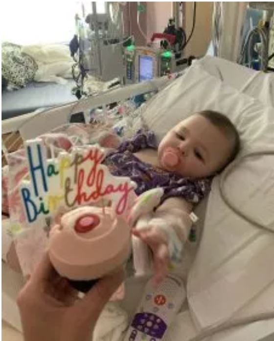

A Brave Beginning
When London was born in February 2021, her parents brought her home to celebrate her arrival with their family. Two days later, they got a life-changing call from the hospital. London had tested positive for a rare metabolic disease known as MSUD, or Maple Syrup Disease. Affecting only one in approximately 185,000 births, London’s diagnosis meant her body was unable to break down certain amino acids* in food. High levels of these amino acids in the blood are toxic and if not caught, could result in brain damage, neurological disorders, and death. To survive, London’s two options were to adopt a severely restricted diet with frequent testing and lots of caution or have a liver transplant.
"Even the smallest act of kindness can change a life forever."
A Fighting Spirit
After her diagnosis, London was often in the hospital. Her parents kept the family isolated from others to avoid exposure to sickness. Because of her disease, London had to follow a special diet and required tube feeding. Without a liver transplant, it was clear London would be unable to live like or interact with other children her age.
The Best Gift
On February 15th, 2022, three days before London’s first birthday, London’s family got the call that a donor match was found, and London would receive a new liver.
"Organ donation is an act of love and hope."
Since her transplant, London’s life has changed for the better. She can eat all types of food and her family feels more free to enjoy activities out of the house. Now, London loves to play with other kids at the park and attend weekly art classes. She also has big plans to start playing soccer.
“London’s donor and their family’s selfless choice means the world to us,” her family says. “It gave London the opportunity to live a normal, healthy life without the life-threatening risks that come with her disease.”